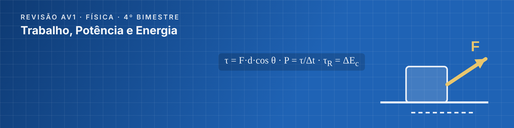

Legacy School · Barra da Tijuca · Prof. Jair Pimenta · 4º bimestre 2026 · 1ª, 2ª e 3ª séries
Como usar este kit
Cada turma tem a estrutura completa: banner, descrição, 8 tópicos, 11 a 13 postagens com texto pronto (botão Copiar), vídeos do YouTube conferidos, duas listas de entrega, gabarito agendado, quiz com correção automática e avisos de mural com data de agendamento. As datas usam a contagem regressiva até a prova (D-10 = 10 dias antes da AV1).
1 · Banner e descrição
Envie o banner da turma (Personalizar → Fazer upload de foto) e cole a descrição.
2 · Tópicos
Crie os 8 tópicos na ordem indicada. O 📌 COMECE AQUI fica no topo.
3 · Postagens
Publique na ordem. Use “Programar” nos itens com data (gabarito e avisos).
4 · Quiz
Crie o Teste no Forms a partir de Atividades → Criar → Atividade com teste.
Cronograma até a AV1
Quando
O que acontece no Classroom
D-10
Tudo publicado; aviso de abertura no mural
D-10 a D-6
Alunos estudam o mapa mental e assistem às videoaulas
D-5, 23h59
Prazo da Lista Níveis 1 e 2
D-3, 7h
Aviso automático de lembrete
D-2, 23h59
Prazo da Lista Níveis 3 e 4 · gabarito comentado liberado automaticamente
D-1
Quiz relâmpago · aviso de véspera às 17h

1ª Série EM · Trabalho, Potência e Energia
6 blocos de vídeo · 10 vídeos verificados · quiz de 10 questões · 16 postagens prontas
1. Configuração da turma
Personalizar → Selecionar tema → Fazer upload de foto: envie banner-1a-serie.png (1000 × 250 px).
Configurações → Descrição da turma:
Física · 1ª Série EM · Prof. Jair Pimenta · Legacy School — Barra da Tijuca. Revisão para a AV1 do 4º bimestre: Trabalho, Potência e Energia. Comece pelo tópico 📌 COMECE AQUI.
2. Tópicos (crie nesta ordem e arraste para ficarem assim)
📌 COMECE AQUI
🗺️ 1. Mapa mental e resumo teórico
🎬 2. Videoaulas por assunto
✍️ 3. Lista graduada — Níveis 1 e 2
🎯 4. Lista graduada — Níveis 3 e 4
✅ 5. Gabarito comentado
🧠 6. Quiz de autoavaliação
❓ Plantão de dúvidas
3. Postagens — na ordem de publicação
01Aviso (mural)Abertura da revisão—
Título
Abertura da revisão
Texto / instruções
📣 REVISÃO PARA A AV1 DE FÍSICA ESTÁ NO AR!
Turma, preparei um percurso completo para vocês chegarem à AV1 do 4º bimestre seguros e confiantes.
Tema: Trabalho, Potência e Energia.
Na aba Atividades vocês vão encontrar, nesta ordem:
📌 Comece aqui — o roteiro de estudos
🗺️ Mapa mental + resumo teórico com as pegadinhas mais comuns
🎬 Videoaulas selecionadas por assunto (curtas e diretas)
✍️ Lista graduada em 4 níveis (do aquecimento ao desafio)
🧠 Quiz de autoavaliação com correção automática
✅ Gabarito comentado passo a passo (liberado após o prazo da lista)
Dica de ouro: estudar um pouco por dia rende muito mais do que estudar tudo na véspera.
Qualquer dúvida, use o tópico "Plantão de dúvidas". Bons estudos! 💪
Prof. Jair Pimenta
Configurar: Publicar no início da revisão (D-10).
02MaterialRoteiro de estudos — AV1 1ª Série EM📌 COMECE AQUI
Título
Roteiro de estudos — AV1 1ª Série EM
Texto / instruções
Este é o seu mapa até a AV1. Siga as etapas na ordem e marque o que já concluiu.
O QUE CAI: trabalho de força constante e variável (gráfico F × x), trabalho do peso, da força elástica e do atrito, potência, rendimento, teorema da energia cinética e conservação da energia.
ROTEIRO SUGERIDO
1️⃣ D-10 a D-8 → Leia o mapa mental e o resumo teórico (páginas 1 a 3 do PDF). Anote dúvidas.
2️⃣ D-8 a D-6 → Assista às videoaulas do tópico 🎬, respondendo à "missão" de cada vídeo.
3️⃣ D-7 a D-5 → Resolva a Lista Níveis 1 e 2 e entregue a foto da resolução.
4️⃣ D-5 a D-2 → Resolva a Lista Níveis 3 e 4 (padrão prova e desafio).
5️⃣ D-2 → Corrija tudo com o Gabarito Comentado. Errou? Refaça sem olhar.
6️⃣ D-1 → Faça o Quiz de autoavaliação e revise o checklist "Eu sei..." do PDF.
COMO ESTUDAR MELHOR
• Tente cada questão sozinho antes de olhar a resolução.
• Escreva as unidades em todas as contas (cm → m, min → s, km/h → m/s).
• Faça o desenho/diagrama da situação antes de calcular.
• Errou? Classifique o erro: conceito, conta ou interpretação.
03MaterialMapa mental, teoria e pegadinhas — Trabalho, Potência e Energia🗺️ 1. Mapa mental e resumo teórico
Título
Mapa mental, teoria e pegadinhas — Trabalho, Potência e Energia
Texto / instruções
Material-base da revisão (lista sem gabarito).
Páginas 1–3: mapa mental, teoria essencial, dicas 💡 e pegadinhas ⚠ que mais tiram pontos.
Página do checklist "Eu sei...": use para conferir se está pronto para a prova.
Páginas seguintes: lista com 20 exercícios graduados.
Sugestão: imprima o mapa mental e deixe à vista na sua mesa de estudos.
04Material🎬 1. Trabalho de uma força🎬 2. Videoaulas por assunto
Título
🎬 1. Trabalho de uma força
Texto / instruções
OBJETIVO: Entender τ = F·d·cos θ e quando o trabalho é motor, resistente ou nulo.
VÍDEOS RECOMENDADOS
▶ Física - Trabalho de uma força — Física em Minutos (4:25)
https://www.youtube.com/watch?v=HjDhps5zP9Q
▶ Trabalho de uma força constante, da força peso e de força variável — Maurício Física (9:10)
https://www.youtube.com/watch?v=8OOXdgS-FsM
🎯 MISSÃO DO VÍDEO: Por que a força normal não realiza trabalho quando a caixa desliza no chão?
Responda no caderno — essa ideia costuma aparecer na prova.
Configurar: Anexar cada vídeo pelo botão YouTube (o Classroom mostra a miniatura).
05Material🎬 2. Força variável: o gráfico F × x🎬 2. Videoaulas por assunto
Título
🎬 2. Força variável: o gráfico F × x
Texto / instruções
OBJETIVO: Calcular trabalho pela área sob o gráfico.
VÍDEOS RECOMENDADOS
▶ Trabalho de uma força variável — Matemática no Papel (6:22)
https://www.youtube.com/watch?v=McFqWSVPGpI
🎯 MISSÃO DO VÍDEO: Como fica o sinal do trabalho quando a área está abaixo do eixo x?
Responda no caderno — essa ideia costuma aparecer na prova.
Configurar: Anexar cada vídeo pelo botão YouTube (o Classroom mostra a miniatura).
06Material🎬 3. Trabalho do peso e da força elástica🎬 2. Videoaulas por assunto
Título
🎬 3. Trabalho do peso e da força elástica
Texto / instruções
OBJETIVO: Usar ±m·g·h e ±k·x²/2 e ler k num gráfico.
VÍDEOS RECOMENDADOS
▶ Força elástica - Lei de Hooke — Matemática no Papel (5:29)
https://www.youtube.com/watch?v=yrcCqOhvSIY
▶ Trabalho da força peso e da força elástica (Aula 19) — Professor Boaro (21:42)
https://www.youtube.com/watch?v=i5n0m6ui83U
🎯 MISSÃO DO VÍDEO: Por que o trabalho do peso não depende da trajetória?
Responda no caderno — essa ideia costuma aparecer na prova.
Configurar: Anexar cada vídeo pelo botão YouTube (o Classroom mostra a miniatura).
07Material🎬 4. Potência e rendimento🎬 2. Videoaulas por assunto
Título
🎬 4. Potência e rendimento
Texto / instruções
OBJETIVO: Calcular P = τ/Δt, P = F·v e η = P_útil/P_total.
VÍDEOS RECOMENDADOS
▶ Potência mecânica: consumo e rendimento — Curso Enem Gratuito (6:56)
https://www.youtube.com/watch?v=objIr0eQIWQ
▶ Potência mecânica e rendimento (Aula 20) — Professor Boaro (13:12)
https://www.youtube.com/watch?v=HX_TtKmt7Tk
🎯 MISSÃO DO VÍDEO: Um motor de 1 500 W com rendimento de 60% entrega quanta potência útil?
Responda no caderno — essa ideia costuma aparecer na prova.
Configurar: Anexar cada vídeo pelo botão YouTube (o Classroom mostra a miniatura).
08Material🎬 5. Teorema da energia cinética🎬 2. Videoaulas por assunto
Título
🎬 5. Teorema da energia cinética
Texto / instruções
OBJETIVO: Aplicar τ_total = ΔEc, inclusive com atrito.
VÍDEOS RECOMENDADOS
▶ Teorema da energia cinética — Matemática no Papel (6:37)
https://www.youtube.com/watch?v=g7OfZUyiexQ
▶ Energia cinética e teorema da energia cinética (Aula 22) — Professor Boaro (17:06)
https://www.youtube.com/watch?v=0sI9UBM4knQ
🎯 MISSÃO DO VÍDEO: Se a velocidade é constante, quanto vale o trabalho total? E o de cada força?
Responda no caderno — essa ideia costuma aparecer na prova.
Configurar: Anexar cada vídeo pelo botão YouTube (o Classroom mostra a miniatura).
09Material🎬 6. Energia mecânica e conservação🎬 2. Videoaulas por assunto
Título
🎬 6. Energia mecânica e conservação
Texto / instruções
OBJETIVO: Resolver bungee jump, molas e rampas por conservação.
VÍDEOS RECOMENDADOS
▶ Energia mecânica e sua conservação (Aula 13) — Davi Oliveira - Física 2.0 (19:56)
https://www.youtube.com/watch?v=Xs2-gA6i_pg
🎯 MISSÃO DO VÍDEO: Em que situação a energia mecânica NÃO se conserva? Para onde ela vai?
Responda no caderno — essa ideia costuma aparecer na prova.
Configurar: Anexar cada vídeo pelo botão YouTube (o Classroom mostra a miniatura).
10AtividadeLista de revisão — Níveis 1 e 2 (questões 1 a 10)✍️ 3. Lista graduada — Níveis 1 e 2
Título
Lista de revisão — Níveis 1 e 2 (questões 1 a 10)
Texto / instruções
Resolva as questões 1 a 10 do PDF de revisão.
🟢 Nível 1 (1–5): aquecimento — aplicação direta.
🔵 Nível 2 (6–10): fixação — duas etapas, gráficos e conversões.
COMO ENTREGAR
1. Resolva no caderno, mostrando os cálculos e as unidades.
2. Tire fotos nítidas (ou digitalize) e anexe aqui.
3. Clique em "Marcar como concluída".
Critério: entrega completa e organizada. O objetivo é treinar — não tenha medo de errar!
Configurar: Pontos: sem nota (ou 0,5 de participação, a critério). Data de entrega: D-5, 23h59.
11AtividadeLista de revisão — Níveis 3 e 4 (questões 11 a 20)🎯 4. Lista graduada — Níveis 3 e 4
Título
Lista de revisão — Níveis 3 e 4 (questões 11 a 20)
Texto / instruções
Resolva as questões 11 a 20 do PDF de revisão.
🟠 Nível 3 (11–15): PADRÃO DA PROVA — mesmo estilo e dificuldade da AV1.
🔴 Nível 4 (16–20): DESAFIO — acima do nível da prova. Quem domina estas, chega à prova com folga.
COMO ENTREGAR
Fotos nítidas da resolução completa (com desenho, fórmula, substituição e unidade).
Travou numa questão? Escreva até onde chegou e onde travou — isso também conta!
Configurar: Pontos: sem nota (ou 0,5 de participação). Data de entrega: D-2, 23h59.
12Teste (Formulário)Quiz relâmpago — AV1 1ª Série EM (10 questões)🧠 6. Quiz de autoavaliação
Título
Quiz relâmpago — AV1 1ª Série EM (10 questões)
Texto / instruções
Quiz com 10 questões rápidas e correção automática.
• Faça sem consultar, em até 15 minutos.
• Ao enviar, veja quais errou e leia o feedback de cada questão.
• Meta: 8 acertos ou mais. Abaixo disso, volte ao mapa mental e aos vídeos do assunto em que errou.
• Pode refazer quantas vezes quiser.
Anexos
Google Forms (Teste) — criar com as questões da aba “Quiz” deste kit
Configurar: Atividade com teste · sem nota · data: D-1. Ativar ordem aleatória das opções e mostrar respostas após o envio.
13Material (agendado)Gabarito comentado — Lista de revisão 1ª Série EM✅ 5. Gabarito comentado
Título
Gabarito comentado — Lista de revisão 1ª Série EM
Texto / instruções
Resolução passo a passo das 20 questões, com os erros mais comuns em cada uma.
COMO CORRIGIR
1. Compare só a resposta final primeiro. Marque ✔ ou ✘.
2. Nas erradas, leia a resolução e identifique ONDE errou (conceito, conta ou interpretação).
3. Feche o gabarito e refaça a questão sozinho.
4. Ainda com dúvida? Poste no Plantão de dúvidas com o número da questão.
Configurar: Agendar para D-2 às 23h59 (logo após o prazo da lista de níveis 3 e 4).
14PerguntaPlantão de dúvidas: em qual questão você travou?❓ Plantão de dúvidas
Título
Plantão de dúvidas: em qual questão você travou?
Texto / instruções
Escreva o número da questão (ou o assunto) em que você mais travou e o que exatamente não entendeu.
Responda e comente nas dúvidas dos colegas — explicar para alguém é uma das melhores formas de aprender!
Configurar: Pergunta de resposta curta · permitir que os alunos vejam e respondam uns aos outros · sem nota.
15Aviso (mural)Lembrete D-3—
Título
Lembrete D-3
Texto / instruções
⏰ Faltam 3 dias para a AV1 de Física!
Checklist rápido:
☐ Já resolvi a Lista Níveis 1 e 2?
☐ Já comecei a Lista Níveis 3 e 4? (prazo: D-2)
☐ Assisti aos vídeos dos assuntos em que tenho mais dificuldade?
Lembrem: o nível 3 da lista tem o mesmo estilo da prova. Prof. Jair
Configurar: Agendar para D-3, 7h.
16Aviso (mural)Véspera da prova—
Título
Véspera da prova
Texto / instruções
🎯 AMANHÃ É DIA DE AV1!
Para hoje:
✔ Faça o Quiz relâmpago (meta: 8/10).
✔ Revise o mapa mental e as caixas ⚠ Pegadinha do PDF.
✔ Confira o gabarito comentado das questões que errou.
Para amanhã: caneta azul ou preta, nada de corretivo, celular guardado e calma.
Leia cada enunciado duas vezes e escreva as unidades. Vocês estão preparados. Boa prova! 🍀
Prof. Jair Pimenta
Configurar: Agendar para D-1, 17h.
4. Quiz de autoavaliação (Google Forms → Teste)
Em Configurações do Forms: Transformar em teste; liberar nota imediatamente após o envio; mostrar respostas corretas e valores; em cada questão, ativar Ordem aleatória das opções (aqui a correta aparece sempre primeiro, marcada com ✔) e colar o feedback em “Feedback para respostas”.
Qual é a unidade de trabalho no SI?
✔ joule (J)
watt (W)
newton (N)
quilowatt-hora (kWh)
Feedback: Trabalho é energia: 1 J = 1 N·m. Watt é unidade de potência.
Uma força perpendicular ao deslocamento realiza trabalho:
✔ nulo
máximo
negativo
positivo
Feedback: cos 90° = 0 ⇒ τ = 0 (ex.: normal num piso horizontal).
Um corpo de 3 kg é erguido 2 m. O trabalho do PESO é (g = 10 m/s²):
✔ −60 J
+60 J
−6 J
zero
Feedback: Corpo sobe ⇒ τ_peso = −m·g·h = −3·10·2 = −60 J.
Num gráfico F × x, a área sob a curva representa:
✔ o trabalho da força
a potência
a aceleração
a energia potencial do corpo
Feedback: τ = área (numericamente) no gráfico força × posição.
Um motor realiza 600 J em 2 minutos. Sua potência média é:
✔ 5 W
300 W
1 200 W
10 W
Feedback: 2 min = 120 s ⇒ P = 600/120 = 5 W. Cuidado com minutos!
Um motor recebe 1 000 W e fornece 800 W úteis. O rendimento é:
✔ 80%
20%
125%
8%
Feedback: η = P_útil/P_total = 800/1000 = 0,8 = 80%.
Se a velocidade de um corpo dobra, sua energia cinética:
✔ quadruplica
dobra
fica igual
cai pela metade
Feedback: Ec = m·v²/2: v → 2v ⇒ Ec → 4·Ec.
Uma mola (k = 100 N/m) deformada 0,2 m armazena:
✔ 2 J
20 J
10 J
4 J
Feedback: Ee = k·x²/2 = 100·0,04/2 = 2 J.
Um bloco desliza com velocidade constante num piso com atrito. O trabalho TOTAL sobre ele é:
✔ nulo
positivo
negativo
igual ao trabalho do atrito
Feedback: v constante ⇒ ΔEc = 0 ⇒ τ_total = 0 (força aplicada e atrito se compensam).
Um corpo cai do repouso de 5 m de altura, sem resistência do ar. Ao chegar ao chão, v vale:
5 blocos de vídeo · 10 vídeos verificados · quiz de 10 questões · 15 postagens prontas
1. Configuração da turma
Personalizar → Selecionar tema → Fazer upload de foto: envie banner-2a-serie.png (1000 × 250 px).
Configurações → Descrição da turma:
Física · 2ª Série EM · Prof. Jair Pimenta · Legacy School — Barra da Tijuca. Revisão para a AV1 do 4º bimestre: Espelhos Planos e Esféricos. Comece pelo tópico 📌 COMECE AQUI.
2. Tópicos (crie nesta ordem e arraste para ficarem assim)
📌 COMECE AQUI
🗺️ 1. Mapa mental e resumo teórico
🎬 2. Videoaulas por assunto
✍️ 3. Lista graduada — Níveis 1 e 2
🎯 4. Lista graduada — Níveis 3 e 4
✅ 5. Gabarito comentado
🧠 6. Quiz de autoavaliação
❓ Plantão de dúvidas
3. Postagens — na ordem de publicação
01Aviso (mural)Abertura da revisão—
Título
Abertura da revisão
Texto / instruções
📣 REVISÃO PARA A AV1 DE FÍSICA ESTÁ NO AR!
Turma, preparei um percurso completo para vocês chegarem à AV1 do 4º bimestre seguros e confiantes.
Tema: Espelhos Planos e Esféricos.
Na aba Atividades vocês vão encontrar, nesta ordem:
📌 Comece aqui — o roteiro de estudos
🗺️ Mapa mental + resumo teórico com as pegadinhas mais comuns
🎬 Videoaulas selecionadas por assunto (curtas e diretas)
✍️ Lista graduada em 4 níveis (do aquecimento ao desafio)
🧠 Quiz de autoavaliação com correção automática
✅ Gabarito comentado passo a passo (liberado após o prazo da lista)
Dica de ouro: estudar um pouco por dia rende muito mais do que estudar tudo na véspera.
Qualquer dúvida, use o tópico "Plantão de dúvidas". Bons estudos! 💪
Prof. Jair Pimenta
Configurar: Publicar no início da revisão (D-10).
02MaterialRoteiro de estudos — AV1 2ª Série EM📌 COMECE AQUI
Título
Roteiro de estudos — AV1 2ª Série EM
Texto / instruções
Este é o seu mapa até a AV1. Siga as etapas na ordem e marque o que já concluiu.
O QUE CAI: leis da reflexão, espelho plano (imagem, reversão, translação, rotação, associação, campo visual), espelhos esféricos (elementos, raios notáveis, casos de imagem), equação de Gauss, aumento linear e aplicações.
ROTEIRO SUGERIDO
1️⃣ D-10 a D-8 → Leia o mapa mental e o resumo teórico (páginas 1 a 3 do PDF). Anote dúvidas.
2️⃣ D-8 a D-6 → Assista às videoaulas do tópico 🎬, respondendo à "missão" de cada vídeo.
3️⃣ D-7 a D-5 → Resolva a Lista Níveis 1 e 2 e entregue a foto da resolução.
4️⃣ D-5 a D-2 → Resolva a Lista Níveis 3 e 4 (padrão prova e desafio).
5️⃣ D-2 → Corrija tudo com o Gabarito Comentado. Errou? Refaça sem olhar.
6️⃣ D-1 → Faça o Quiz de autoavaliação e revise o checklist "Eu sei..." do PDF.
COMO ESTUDAR MELHOR
• Tente cada questão sozinho antes de olhar a resolução.
• Escreva as unidades em todas as contas (cm → m, min → s, km/h → m/s).
• Faça o desenho/diagrama da situação antes de calcular.
• Errou? Classifique o erro: conceito, conta ou interpretação.
03MaterialMapa mental, teoria e pegadinhas — Espelhos Planos e Esféricos🗺️ 1. Mapa mental e resumo teórico
Título
Mapa mental, teoria e pegadinhas — Espelhos Planos e Esféricos
Texto / instruções
Material-base da revisão (lista sem gabarito).
Páginas 1–3: mapa mental, teoria essencial, dicas 💡 e pegadinhas ⚠ que mais tiram pontos.
Página do checklist "Eu sei...": use para conferir se está pronto para a prova.
Páginas seguintes: lista com 20 exercícios graduados.
Sugestão: imprima o mapa mental e deixe à vista na sua mesa de estudos.
04Material🎬 1. Leis da reflexão e espelho plano🎬 2. Videoaulas por assunto
Título
🎬 1. Leis da reflexão e espelho plano
Texto / instruções
OBJETIVO: Medir ângulos com a normal e descrever a imagem do espelho plano.
VÍDEOS RECOMENDADOS
▶ Reflexão em espelhos planos: leis da reflexão e características de imagens — Curso Enem Gratuito (4:31)
https://www.youtube.com/watch?v=U1EjY7pNgzk
▶ Aula 04 - Espelhos planos — Davi Oliveira - Física 2.0 (15:36)
https://www.youtube.com/watch?v=aIt5OVeAI1w
🎯 MISSÃO DO VÍDEO: Por que a palavra AMBULÂNCIA é escrita invertida no capô?
Responda no caderno — essa ideia costuma aparecer na prova.
Configurar: Anexar cada vídeo pelo botão YouTube (o Classroom mostra a miniatura).
05Material🎬 2. Espelho plano e campo visual🎬 2. Videoaulas por assunto
Título
🎬 2. Espelho plano e campo visual
Texto / instruções
OBJETIVO: Distância objeto–imagem, campo visual e tamanho mínimo do espelho.
VÍDEOS RECOMENDADOS
▶ Espelho plano (I) e campo visual - Aula 3 — Professor Boaro (31:26)
https://www.youtube.com/watch?v=WDDJsiN-_aY
🎯 MISSÃO DO VÍDEO: Para se ver por inteiro, o espelho precisa ter que fração da sua altura?
Responda no caderno — essa ideia costuma aparecer na prova.
Configurar: Anexar cada vídeo pelo botão YouTube (o Classroom mostra a miniatura).
06Material🎬 3. Rotação, translação e associação🎬 2. Videoaulas por assunto
Título
🎬 3. Rotação, translação e associação
Texto / instruções
OBJETIVO: Usar 2d, 2v, 2α e N = 360°/α − 1.
VÍDEOS RECOMENDADOS
▶ Associação de espelhos planos: número de imagens — Curso Enem Gratuito (3:49)
https://www.youtube.com/watch?v=uxBDRU-vyuo
▶ Espelho plano (II) - rotação, translação e associação - Aula 4 — Professor Boaro (25:46)
https://www.youtube.com/watch?v=0-TbKgjAGig
🎯 MISSÃO DO VÍDEO: Quantas imagens se formam com dois espelhos a 90°? E a 60°?
Responda no caderno — essa ideia costuma aparecer na prova.
Configurar: Anexar cada vídeo pelo botão YouTube (o Classroom mostra a miniatura).
07Material🎬 4. Espelhos esféricos: côncavo e convexo🎬 2. Videoaulas por assunto
Título
🎬 4. Espelhos esféricos: côncavo e convexo
Texto / instruções
OBJETIVO: Elementos (V, C, F), raios notáveis e os casos de imagem.
VÍDEOS RECOMENDADOS
▶ Espelhos planos, côncavos e convexos (como as imagens se formam?) — Ciência Todo Dia (9:08)
https://www.youtube.com/watch?v=KPykPLP7osA
▶ Espelhos esféricos - espelhos côncavos e convexos — Matemática no Papel (10:58)
https://www.youtube.com/watch?v=SYgrthl-E80
🎯 MISSÃO DO VÍDEO: Em que posição do objeto o espelho côncavo forma imagem virtual e ampliada?
Responda no caderno — essa ideia costuma aparecer na prova.
Configurar: Anexar cada vídeo pelo botão YouTube (o Classroom mostra a miniatura).
08Material🎬 5. Equação de Gauss e aumento linear🎬 2. Videoaulas por assunto
Título
🎬 5. Equação de Gauss e aumento linear
Texto / instruções
OBJETIVO: Aplicar 1/f = 1/p + 1/p' e A = −p'/p com os sinais certos.
VÍDEOS RECOMENDADOS
▶ Equação de Gauss - espelhos esféricos — Física Up - Profa. Carina Vellosa (8:54)
https://www.youtube.com/watch?v=AeN0GQZwDkU
▶ Aumento linear para espelhos esféricos — Física Up - Profa. Carina Vellosa (13:08)
https://www.youtube.com/watch?v=lvoqw4hA7rg
▶ Espelhos esféricos (III) - estudo analítico - Aula 7 — Professor Boaro (25:31)
https://www.youtube.com/watch?v=dzOy3ypU6K0
🎯 MISSÃO DO VÍDEO: Qual o sinal de f num espelho convexo? E o de p' numa imagem virtual?
Responda no caderno — essa ideia costuma aparecer na prova.
Configurar: Anexar cada vídeo pelo botão YouTube (o Classroom mostra a miniatura).
09AtividadeLista de revisão — Níveis 1 e 2 (questões 1 a 10)✍️ 3. Lista graduada — Níveis 1 e 2
Título
Lista de revisão — Níveis 1 e 2 (questões 1 a 10)
Texto / instruções
Resolva as questões 1 a 10 do PDF de revisão.
🟢 Nível 1 (1–5): aquecimento — aplicação direta.
🔵 Nível 2 (6–10): fixação — duas etapas, gráficos e conversões.
COMO ENTREGAR
1. Resolva no caderno, mostrando os cálculos e as unidades.
2. Tire fotos nítidas (ou digitalize) e anexe aqui.
3. Clique em "Marcar como concluída".
Critério: entrega completa e organizada. O objetivo é treinar — não tenha medo de errar!
Configurar: Pontos: sem nota (ou 0,5 de participação, a critério). Data de entrega: D-5, 23h59.
10AtividadeLista de revisão — Níveis 3 e 4 (questões 11 a 20)🎯 4. Lista graduada — Níveis 3 e 4
Título
Lista de revisão — Níveis 3 e 4 (questões 11 a 20)
Texto / instruções
Resolva as questões 11 a 20 do PDF de revisão.
🟠 Nível 3 (11–15): PADRÃO DA PROVA — mesmo estilo e dificuldade da AV1.
🔴 Nível 4 (16–20): DESAFIO — acima do nível da prova. Quem domina estas, chega à prova com folga.
COMO ENTREGAR
Fotos nítidas da resolução completa (com desenho, fórmula, substituição e unidade).
Travou numa questão? Escreva até onde chegou e onde travou — isso também conta!
Configurar: Pontos: sem nota (ou 0,5 de participação). Data de entrega: D-2, 23h59.
11Teste (Formulário)Quiz relâmpago — AV1 2ª Série EM (10 questões)🧠 6. Quiz de autoavaliação
Título
Quiz relâmpago — AV1 2ª Série EM (10 questões)
Texto / instruções
Quiz com 10 questões rápidas e correção automática.
• Faça sem consultar, em até 15 minutos.
• Ao enviar, veja quais errou e leia o feedback de cada questão.
• Meta: 8 acertos ou mais. Abaixo disso, volte ao mapa mental e aos vídeos do assunto em que errou.
• Pode refazer quantas vezes quiser.
Anexos
Google Forms (Teste) — criar com as questões da aba “Quiz” deste kit
Configurar: Atividade com teste · sem nota · data: D-1. Ativar ordem aleatória das opções e mostrar respostas após o envio.
12Material (agendado)Gabarito comentado — Lista de revisão 2ª Série EM✅ 5. Gabarito comentado
Título
Gabarito comentado — Lista de revisão 2ª Série EM
Texto / instruções
Resolução passo a passo das 20 questões, com os erros mais comuns em cada uma.
COMO CORRIGIR
1. Compare só a resposta final primeiro. Marque ✔ ou ✘.
2. Nas erradas, leia a resolução e identifique ONDE errou (conceito, conta ou interpretação).
3. Feche o gabarito e refaça a questão sozinho.
4. Ainda com dúvida? Poste no Plantão de dúvidas com o número da questão.
Configurar: Agendar para D-2 às 23h59 (logo após o prazo da lista de níveis 3 e 4).
13PerguntaPlantão de dúvidas: em qual questão você travou?❓ Plantão de dúvidas
Título
Plantão de dúvidas: em qual questão você travou?
Texto / instruções
Escreva o número da questão (ou o assunto) em que você mais travou e o que exatamente não entendeu.
Responda e comente nas dúvidas dos colegas — explicar para alguém é uma das melhores formas de aprender!
Configurar: Pergunta de resposta curta · permitir que os alunos vejam e respondam uns aos outros · sem nota.
14Aviso (mural)Lembrete D-3—
Título
Lembrete D-3
Texto / instruções
⏰ Faltam 3 dias para a AV1 de Física!
Checklist rápido:
☐ Já resolvi a Lista Níveis 1 e 2?
☐ Já comecei a Lista Níveis 3 e 4? (prazo: D-2)
☐ Assisti aos vídeos dos assuntos em que tenho mais dificuldade?
Lembrem: o nível 3 da lista tem o mesmo estilo da prova. Prof. Jair
Configurar: Agendar para D-3, 7h.
15Aviso (mural)Véspera da prova—
Título
Véspera da prova
Texto / instruções
🎯 AMANHÃ É DIA DE AV1!
Para hoje:
✔ Faça o Quiz relâmpago (meta: 8/10).
✔ Revise o mapa mental e as caixas ⚠ Pegadinha do PDF.
✔ Confira o gabarito comentado das questões que errou.
Para amanhã: caneta azul ou preta, nada de corretivo, celular guardado e calma.
Leia cada enunciado duas vezes e escreva as unidades. Vocês estão preparados. Boa prova! 🍀
Prof. Jair Pimenta
Configurar: Agendar para D-1, 17h.
4. Quiz de autoavaliação (Google Forms → Teste)
Em Configurações do Forms: Transformar em teste; liberar nota imediatamente após o envio; mostrar respostas corretas e valores; em cada questão, ativar Ordem aleatória das opções (aqui a correta aparece sempre primeiro, marcada com ✔) e colar o feedback em “Feedback para respostas”.
Um raio incide num espelho plano com ângulo de incidência de 40°. O ângulo de reflexão é:
✔ 40°
50°
80°
20°
Feedback: 2ª lei da reflexão: i = r (ambos medidos com a normal).
A imagem de um objeto real num espelho plano é:
✔ virtual, direita e do mesmo tamanho
real, invertida e do mesmo tamanho
virtual, invertida e menor
real, direita e maior
Feedback: Espelho plano: virtual, direita, igual, simétrica e enantiomorfa.
Uma pessoa está a 1,5 m de um espelho plano. A distância entre ela e sua imagem é:
✔ 3,0 m
1,5 m
0,75 m
4,5 m
Feedback: A imagem fica 1,5 m atrás do espelho ⇒ 1,5 + 1,5 = 3,0 m.
Dois espelhos planos formam 120°. Quantas imagens de um objeto entre eles se formam?
✔ 2
3
4
1
Feedback: N = 360°/120° − 1 = 3 − 1 = 2.
Um espelho côncavo tem raio de curvatura 30 cm. Sua distância focal é:
✔ 15 cm
30 cm
60 cm
7,5 cm
Feedback: f = R/2 = 15 cm.
Um objeto sobre o foco de um espelho côncavo produz imagem:
✔ imprópria (no infinito)
real e igual
virtual e menor
real e menor
Feedback: Raios que saem do foco refletem paralelos: não se cruzam.
Para qualquer objeto real, o espelho convexo forma imagem:
✔ virtual, direita e menor
real, invertida e menor
virtual, direita e maior
real, direita e igual
Feedback: Espelho divergente: sempre virtual, direita e menor.
Uma imagem com aumento linear A = −2 é:
✔ real, invertida e 2 vezes maior
virtual, direita e 2 vezes maior
real, direita e 2 vezes menor
virtual, invertida e 2 vezes maior
Feedback: A < 0 ⇒ invertida (real); |A| = 2 ⇒ duas vezes maior.
Espelho côncavo com f = 10 cm e objeto a 20 cm. A imagem está a:
✔ 20 cm do espelho
10 cm do espelho
40 cm do espelho
no infinito
Feedback: 1/p' = 1/10 − 1/20 = 1/20 ⇒ p' = 20 cm (objeto no centro C).
O retrovisor de uma motocicleta deve ser:
✔ convexo, pelo maior campo visual
côncavo, para ampliar a imagem
plano, para a imagem ser real
côncavo, para a imagem ser direita
Feedback: Convexo: imagem menor e direita, cabe mais coisa no campo visual.
6 blocos de vídeo · 13 vídeos verificados · quiz de 10 questões · 16 postagens prontas
1. Configuração da turma
Personalizar → Selecionar tema → Fazer upload de foto: envie banner-3a-serie.png (1000 × 250 px).
Configurações → Descrição da turma:
Física · 3ª Série EM · Prof. Jair Pimenta · Legacy School — Barra da Tijuca. Revisão para a AV1 do 4º bimestre: Cinemática e Leis de Newton. Comece pelo tópico 📌 COMECE AQUI.
2. Tópicos (crie nesta ordem e arraste para ficarem assim)
📌 COMECE AQUI
🗺️ 1. Mapa mental e resumo teórico
🎬 2. Videoaulas por assunto
✍️ 3. Lista graduada — Níveis 1 e 2
🎯 4. Lista graduada — Níveis 3 e 4
✅ 5. Gabarito comentado
🧠 6. Quiz de autoavaliação
❓ Plantão de dúvidas
3. Postagens — na ordem de publicação
01Aviso (mural)Abertura da revisão—
Título
Abertura da revisão
Texto / instruções
📣 REVISÃO PARA A AV1 DE FÍSICA ESTÁ NO AR!
Turma, preparei um percurso completo para vocês chegarem à AV1 do 4º bimestre seguros e confiantes.
Tema: Cinemática e Leis de Newton.
Na aba Atividades vocês vão encontrar, nesta ordem:
📌 Comece aqui — o roteiro de estudos
🗺️ Mapa mental + resumo teórico com as pegadinhas mais comuns
🎬 Videoaulas selecionadas por assunto (curtas e diretas)
✍️ Lista graduada em 4 níveis (do aquecimento ao desafio)
🧠 Quiz de autoavaliação com correção automática
✅ Gabarito comentado passo a passo (liberado após o prazo da lista)
Dica de ouro: estudar um pouco por dia rende muito mais do que estudar tudo na véspera.
Qualquer dúvida, use o tópico "Plantão de dúvidas". Bons estudos! 💪
Prof. Jair Pimenta
Configurar: Publicar no início da revisão (D-10).
02MaterialRoteiro de estudos — AV1 3ª Série EM📌 COMECE AQUI
Título
Roteiro de estudos — AV1 3ª Série EM
Texto / instruções
Este é o seu mapa até a AV1. Siga as etapas na ordem e marque o que já concluiu.
O QUE CAI: movimento uniforme e encontro de móveis, MUV e equação de Torricelli, deslocamentos em PA, frenagem, as três leis de Newton, força normal, elevadores/guindastes, atrito e plano inclinado.
ROTEIRO SUGERIDO
1️⃣ D-10 a D-8 → Leia o mapa mental e o resumo teórico (páginas 1 a 3 do PDF). Anote dúvidas.
2️⃣ D-8 a D-6 → Assista às videoaulas do tópico 🎬, respondendo à "missão" de cada vídeo.
3️⃣ D-7 a D-5 → Resolva a Lista Níveis 1 e 2 e entregue a foto da resolução.
4️⃣ D-5 a D-2 → Resolva a Lista Níveis 3 e 4 (padrão prova e desafio).
5️⃣ D-2 → Corrija tudo com o Gabarito Comentado. Errou? Refaça sem olhar.
6️⃣ D-1 → Faça o Quiz de autoavaliação e revise o checklist "Eu sei..." do PDF.
COMO ESTUDAR MELHOR
• Tente cada questão sozinho antes de olhar a resolução.
• Escreva as unidades em todas as contas (cm → m, min → s, km/h → m/s).
• Faça o desenho/diagrama da situação antes de calcular.
• Errou? Classifique o erro: conceito, conta ou interpretação.
03MaterialMapa mental, teoria e pegadinhas — Cinemática e Leis de Newton🗺️ 1. Mapa mental e resumo teórico
Título
Mapa mental, teoria e pegadinhas — Cinemática e Leis de Newton
Texto / instruções
Material-base da revisão (lista sem gabarito).
Páginas 1–3: mapa mental, teoria essencial, dicas 💡 e pegadinhas ⚠ que mais tiram pontos.
Página do checklist "Eu sei...": use para conferir se está pronto para a prova.
Páginas seguintes: lista com 20 exercícios graduados.
Sugestão: imprima o mapa mental e deixe à vista na sua mesa de estudos.
04Material🎬 1. Movimento uniforme e encontro de móveis🎬 2. Videoaulas por assunto
Título
🎬 1. Movimento uniforme e encontro de móveis
Texto / instruções
OBJETIVO: Escrever s = s₀ + v·t e igualar posições.
VÍDEOS RECOMENDADOS
▶ Movimento uniforme | Quer que desenhe? — Descomplica (4:26)
https://www.youtube.com/watch?v=UbRS2iHt-uo
▶ Movimento uniforme - encontro entre móveis em sentidos opostos — Professor Franco (6:48)
https://www.youtube.com/watch?v=7K9M6pof7dQ
▶ Movimento uniforme - encontro entre móveis no mesmo sentido — Professor Franco (5:17)
https://www.youtube.com/watch?v=q2POeIqyDvM
🎯 MISSÃO DO VÍDEO: Quando os móveis vão em sentidos opostos, as velocidades se somam ou se subtraem?
Responda no caderno — essa ideia costuma aparecer na prova.
Configurar: Anexar cada vídeo pelo botão YouTube (o Classroom mostra a miniatura).
05Material🎬 2. MUV: funções horárias🎬 2. Videoaulas por assunto
Título
🎬 2. MUV: funções horárias
Texto / instruções
OBJETIVO: Usar s = s₀ + v₀t + at²/2 e v = v₀ + at.
VÍDEOS RECOMENDADOS
▶ Movimento uniformemente variado (MUV) - Cinemática do zero — Eureka Matemática (17:13)
https://www.youtube.com/watch?v=r6pKRscSTyg
🎯 MISSÃO DO VÍDEO: Em s = 5t + 2t², quanto vale a aceleração? (Cuidado com o a/2!)
Responda no caderno — essa ideia costuma aparecer na prova.
Configurar: Anexar cada vídeo pelo botão YouTube (o Classroom mostra a miniatura).
06Material🎬 3. Equação de Torricelli e frenagem🎬 2. Videoaulas por assunto
Título
🎬 3. Equação de Torricelli e frenagem
Texto / instruções
OBJETIVO: Calcular distâncias de parada sem usar o tempo.
VÍDEOS RECOMENDADOS
▶ Cinemática 19: Equação de Torricelli — Matemática no Papel (5:14)
https://www.youtube.com/watch?v=ahJD6h1O1YQ
▶ Equação de Torricelli (MUV) - Aula 9 — Professor Boaro (17:11)
https://www.youtube.com/watch?v=JfCmVT7hs5Q
🎯 MISSÃO DO VÍDEO: Se a velocidade dobra, a distância de frenagem dobra? Por quê?
Responda no caderno — essa ideia costuma aparecer na prova.
Configurar: Anexar cada vídeo pelo botão YouTube (o Classroom mostra a miniatura).
07Material🎬 4. As três leis de Newton🎬 2. Videoaulas por assunto
Título
🎬 4. As três leis de Newton
Texto / instruções
OBJETIVO: Reconhecer inércia, F = m·a e pares de ação e reação.
VÍDEOS RECOMENDADOS
▶ As 3 leis de Newton: resumo em 5 minutos — Toda Matéria (5:03)
https://www.youtube.com/watch?v=W9fnE9NdFzo
▶ Leis de Newton | Mapa mental | Quer que desenhe — Descomplica (4:10)
https://www.youtube.com/watch?v=5AEZCsEAopY
🎯 MISSÃO DO VÍDEO: Por que peso e normal NÃO formam um par de ação e reação?
Responda no caderno — essa ideia costuma aparecer na prova.
Configurar: Anexar cada vídeo pelo botão YouTube (o Classroom mostra a miniatura).
08Material🎬 5. Força normal e elevadores🎬 2. Videoaulas por assunto
Título
🎬 5. Força normal e elevadores
Texto / instruções
OBJETIVO: Resolver N = m(g ± a) e problemas de guindaste.
VÍDEOS RECOMENDADOS
▶ Elevadores - Dinâmica - Aula 9 — Professor Boaro (25:32)
https://www.youtube.com/watch?v=poC27r1xs9M
🎯 MISSÃO DO VÍDEO: Num elevador descendo e freando, a balança marca mais ou menos que o seu peso?
Responda no caderno — essa ideia costuma aparecer na prova.
Configurar: Anexar cada vídeo pelo botão YouTube (o Classroom mostra a miniatura).
09Material🎬 6. Atrito e plano inclinado🎬 2. Videoaulas por assunto
Título
🎬 6. Atrito e plano inclinado
Texto / instruções
OBJETIVO: Decompor o peso e usar a = g(sen θ − μ cos θ) e μ = tg θ.
VÍDEOS RECOMENDADOS
▶ Força de atrito estático e cinético — Matemática no Papel (13:53)
https://www.youtube.com/watch?v=CbQNtwtjq9Y
▶ Planos inclinados | Resumo de Física para o Enem — Curso Enem Gratuito (5:34)
https://www.youtube.com/watch?v=yt7b3s9NmWQ
▶ Plano inclinado com atrito - Aula 13 — Professor Boaro (19:44)
https://www.youtube.com/watch?v=jggD82vw_7s
▶ Plano inclinado com atrito - exercício resolvido passo a passo — Maurício Física (6:14)
https://www.youtube.com/watch?v=sj8QoYfknIY
🎯 MISSÃO DO VÍDEO: Por que a aceleração no plano inclinado sem atrito não depende da massa?
Responda no caderno — essa ideia costuma aparecer na prova.
Configurar: Anexar cada vídeo pelo botão YouTube (o Classroom mostra a miniatura).
10AtividadeLista de revisão — Níveis 1 e 2 (questões 1 a 10)✍️ 3. Lista graduada — Níveis 1 e 2
Título
Lista de revisão — Níveis 1 e 2 (questões 1 a 10)
Texto / instruções
Resolva as questões 1 a 10 do PDF de revisão.
🟢 Nível 1 (1–5): aquecimento — aplicação direta.
🔵 Nível 2 (6–10): fixação — duas etapas, gráficos e conversões.
COMO ENTREGAR
1. Resolva no caderno, mostrando os cálculos e as unidades.
2. Tire fotos nítidas (ou digitalize) e anexe aqui.
3. Clique em "Marcar como concluída".
Critério: entrega completa e organizada. O objetivo é treinar — não tenha medo de errar!
Configurar: Pontos: sem nota (ou 0,5 de participação, a critério). Data de entrega: D-5, 23h59.
11AtividadeLista de revisão — Níveis 3 e 4 (questões 11 a 20)🎯 4. Lista graduada — Níveis 3 e 4
Título
Lista de revisão — Níveis 3 e 4 (questões 11 a 20)
Texto / instruções
Resolva as questões 11 a 20 do PDF de revisão.
🟠 Nível 3 (11–15): PADRÃO DA PROVA — mesmo estilo e dificuldade da AV1.
🔴 Nível 4 (16–20): DESAFIO — acima do nível da prova. Quem domina estas, chega à prova com folga.
COMO ENTREGAR
Fotos nítidas da resolução completa (com desenho, fórmula, substituição e unidade).
Travou numa questão? Escreva até onde chegou e onde travou — isso também conta!
Configurar: Pontos: sem nota (ou 0,5 de participação). Data de entrega: D-2, 23h59.
12Teste (Formulário)Quiz relâmpago — AV1 3ª Série EM (10 questões)🧠 6. Quiz de autoavaliação
Título
Quiz relâmpago — AV1 3ª Série EM (10 questões)
Texto / instruções
Quiz com 10 questões rápidas e correção automática.
• Faça sem consultar, em até 15 minutos.
• Ao enviar, veja quais errou e leia o feedback de cada questão.
• Meta: 8 acertos ou mais. Abaixo disso, volte ao mapa mental e aos vídeos do assunto em que errou.
• Pode refazer quantas vezes quiser.
Anexos
Google Forms (Teste) — criar com as questões da aba “Quiz” deste kit
Configurar: Atividade com teste · sem nota · data: D-1. Ativar ordem aleatória das opções e mostrar respostas após o envio.
13Material (agendado)Gabarito comentado — Lista de revisão 3ª Série EM✅ 5. Gabarito comentado
Título
Gabarito comentado — Lista de revisão 3ª Série EM
Texto / instruções
Resolução passo a passo das 20 questões, com os erros mais comuns em cada uma.
COMO CORRIGIR
1. Compare só a resposta final primeiro. Marque ✔ ou ✘.
2. Nas erradas, leia a resolução e identifique ONDE errou (conceito, conta ou interpretação).
3. Feche o gabarito e refaça a questão sozinho.
4. Ainda com dúvida? Poste no Plantão de dúvidas com o número da questão.
Configurar: Agendar para D-2 às 23h59 (logo após o prazo da lista de níveis 3 e 4).
14PerguntaPlantão de dúvidas: em qual questão você travou?❓ Plantão de dúvidas
Título
Plantão de dúvidas: em qual questão você travou?
Texto / instruções
Escreva o número da questão (ou o assunto) em que você mais travou e o que exatamente não entendeu.
Responda e comente nas dúvidas dos colegas — explicar para alguém é uma das melhores formas de aprender!
Configurar: Pergunta de resposta curta · permitir que os alunos vejam e respondam uns aos outros · sem nota.
15Aviso (mural)Lembrete D-3—
Título
Lembrete D-3
Texto / instruções
⏰ Faltam 3 dias para a AV1 de Física!
Checklist rápido:
☐ Já resolvi a Lista Níveis 1 e 2?
☐ Já comecei a Lista Níveis 3 e 4? (prazo: D-2)
☐ Assisti aos vídeos dos assuntos em que tenho mais dificuldade?
Lembrem: o nível 3 da lista tem o mesmo estilo da prova. Prof. Jair
Configurar: Agendar para D-3, 7h.
16Aviso (mural)Véspera da prova—
Título
Véspera da prova
Texto / instruções
🎯 AMANHÃ É DIA DE AV1!
Para hoje:
✔ Faça o Quiz relâmpago (meta: 8/10).
✔ Revise o mapa mental e as caixas ⚠ Pegadinha do PDF.
✔ Confira o gabarito comentado das questões que errou.
Para amanhã: caneta azul ou preta, nada de corretivo, celular guardado e calma.
Leia cada enunciado duas vezes e escreva as unidades. Vocês estão preparados. Boa prova! 🍀
Prof. Jair Pimenta
Configurar: Agendar para D-1, 17h.
4. Quiz de autoavaliação (Google Forms → Teste)
Em Configurações do Forms: Transformar em teste; liberar nota imediatamente após o envio; mostrar respostas corretas e valores; em cada questão, ativar Ordem aleatória das opções (aqui a correta aparece sempre primeiro, marcada com ✔) e colar o feedback em “Feedback para respostas”.
36 km/h correspondem a:
✔ 10 m/s
36 m/s
3,6 m/s
129,6 m/s
Feedback: km/h ÷ 3,6 = m/s ⇒ 36/3,6 = 10 m/s.
Para s = 10 + 2t (SI), a posição em t = 5 s é:
✔ 20 m
10 m
12 m
50 m
Feedback: s = 10 + 2·5 = 20 m.
Na função v = 4 + 3t (SI), a aceleração vale:
✔ 3 m/s²
4 m/s²
7 m/s²
1,5 m/s²
Feedback: v = v₀ + a·t ⇒ a é o coeficiente de t: 3 m/s².
Um carro parte do repouso com a = 2 m/s² e percorre 25 m. Sua velocidade final é: